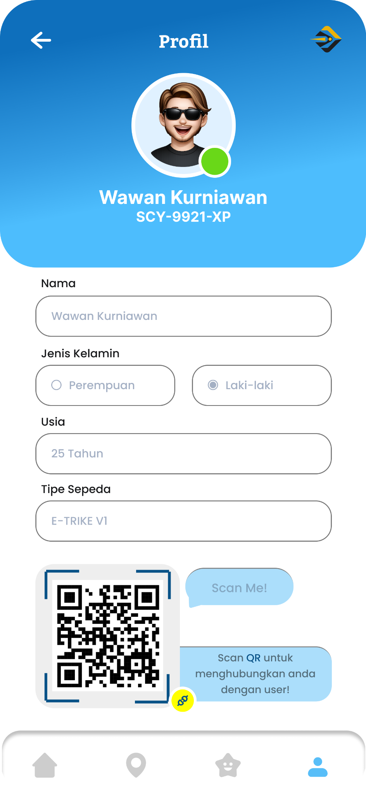

Profil
Wawan Kurniawan
- ID pengguna
- SCY-9921-XP
- Nama
- Wawan Kurniawan
- Jenis kelamin
- Laki-laki
- Usia
- 25 Tahun
- Tipe Sepeda
- E-TRIKE V1
QR pada desain adalah ilustrasi profil, belum terhubung ke akun pengguna.

QR pada desain adalah ilustrasi profil, belum terhubung ke akun pengguna.